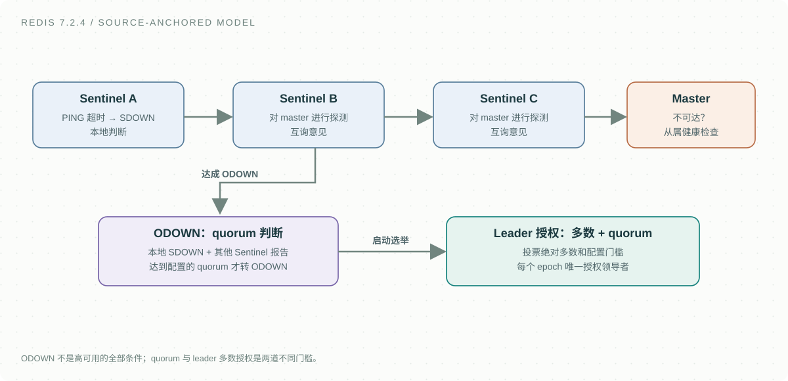
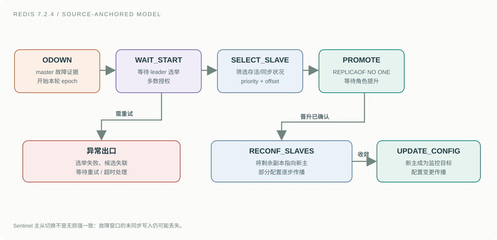
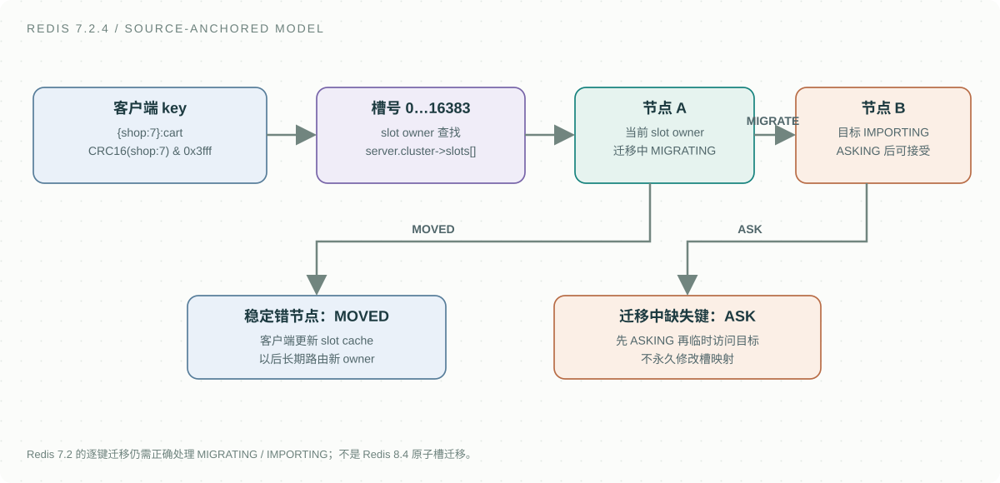

Chapter 22 / Redis 7.2.4 Source Anatomy
Sentinel 与 Cluster：两种故障转移状态机
拆解 Redis 7.2.4 Sentinel 的 SDOWN/ODOWN、quorum/leader、多阶段晋升，以及 Cluster 的 16384 槽、MOVED/ASK、Gossip、PFAIL/FAIL 和 master 多数投票。
Sentinel 和 Cluster 都会故障转移，却解决不同问题
Redis Sentinel 用于监控一个非 Cluster 的主从复制组，在主节点失效时组织副本晋升、通知客户端新主地址并重配其他副本。Redis Cluster 则在高可用之外，把 keyspace 划成 16384 个哈希槽，支持多主分片；客户端需要理解槽路由或使用兼容的 Cluster 客户端。
两者不是“哨兵是小集群、Cluster 是大哨兵”。Sentinel 的授权者是各 Sentinel 进程；Cluster 的节点自己通过 cluster bus 交换 gossip、故障报告、配置 epoch 与投票。把 Sentinel 的 quorum 套进 Cluster 节点选举会错误解释故障转移为何没有发生。
SDOWN：每个 Sentinel 独立根据探测时效得出主观结论
在 Redis 7.2.4 的 sentinel.c 中，sentinelHandleRedisInstance() 会调度 reconnect、周期命令和故障判断。sentinelCheckSubjectivelyDown() 结合 PING 往返、连接状态和 down-after-milliseconds，在规定的时间内缺少可接受响应时设置 SRI_S_DOWN。它只是单个 Sentinel 自己的判断，不代表多数授权。
不同 Sentinel 可能位于不同网络分区，因此同一时刻对 master 的 SDOWN 状态并不一定一致。配置较小的 down-after 阈值可加速检测，但也会在网络抖动下放大误判风险。Sentinel 的 TILT 保护还会在时钟跳变异常时暂缓主动的故障转移操作，因此时钟健康同样重要。
ODOWN 与 leader 选举是两道分开的门槛
sentinelCheckObjectivelyDown() 仅在本 Sentinel 认为 master 是 SDOWN 时，把自身算作一票，再统计其他 Sentinel 报告的 SRI_MASTER_DOWN。赞同者达到该 master 配置的 quorum 才设置 SRI_O_DOWN。例如 3 个 Sentinel、quorum=2：两者同意下线可以达到 ODOWN，但这时还没有自动指定谁来执行故障转移。
sentinelGetLeader() 进一步要求候选 leader 获得投票者绝对多数，并且不少于配置 quorum 的票数。三 Sentinel 配 quorum=2 时通常需要至少 2 票；五 Sentinel 即使 quorum=2，leader 也要满足多数，即至少 3 票。这能限制彼此隔离的 Sentinel 子集各自实施故障转移，但不能保证故障窗口业务零丢失。

这是离线机制模型；它不会连接数据库，也不代表运行时测量结果。
Sentinel 故障转移：投票之后还有副本筛选与重配置
ODOWN 后，sentinelStartFailoverIfNeeded() 会检查是否已有故障转移以及超时重试约束，随后 sentinelStartFailover() 进入 WAIT_START 状态、推进 epoch。sentinelFailoverStateMachine() 按状态推进：WAIT_START（选举）→ SELECT_SLAVE（挑选候选）→ SEND_SLAVEOF_NOONE（让副本提升）→ WAIT_PROMOTION（确认晋升）→ RECONF_SLAVES（重配其余副本），最后更新监控配置。

sentinelSelectSlave() 会过滤已下线、连接不可用、信息过期、优先级为 0 或与原 master 断开太久的副本，再综合 replica-priority、复制 offset 和 runid 排序。选择“最近的副本”不是只看网络 RTT，也不意味着最后几毫秒的写入一定在候选上。
操作人员应把一次故障转移拆解成三段时间：故障探测/ODOWN；leader 选举与提升；配置收敛及客户端更新。SENTINEL get-master-addr-by-name 反映的是 Sentinel 当前配置，客户端仍需自己完成连接切换和重试。
Cluster 的 16384 槽：CRC16 与 hash tag
Cluster 使用 keyHashSlot() 计算 hash slot：先寻找第一组非空的 {...}，若存在则只对括号里的字节计算 CRC16；否则对完整 key 计算 CRC16，结果再与 0x3FFF 按位与，得到 0–16383。这样 {user:7}:cart 与 {user:7}:profile 可以落在同一个槽，用于确实需要同槽执行的多 key 命令。
/* src/cluster.c 中的关键逻辑，概念写法 */
tag = nonemptyFirstHashTag(key) ?? entireKey;
slot = crc16(tag) & 0x3FFF; // 16384 slots
owner = server.cluster->slots[slot];哈希槽归属由 Cluster 节点的配置状态维护，而不是在每次客户端 GET 时自动广播到全体节点。客户端如果把请求发给错误的拥有者，会收到 MOVED slot host:port 并更新槽缓存。跨槽多 key 请求通常会收到 CROSSSLOT；只有满足同槽语义才能在同一节点完成相应原子操作。
MOVED 与 ASK：一个表示稳定归属，一个表示迁移中的临时跳转
槽迁移需要源节点与目标节点配合。Redis 7.2 的 CLUSTER SETSLOT ... MIGRATING/IMPORTING 把一个 slot 标记成过渡状态；源节点对该 slot 已存在的 key 仍可在本地执行，对缺失的 key 可以返回 ASK，让客户端先向目标节点发送 ASKING，再发起原命令。ASK 不是告诉客户端永久修改 slot owner 缓存。

槽全部迁移完毕并正式修改归属后，发到旧节点的请求会收到 MOVED，客户端应更新长期路由。网络与客户端库需要区分 ASK 的单次临时跳转和 MOVED 的稳定重定向；否则容易出现反复重定向、迁移期间写失败或错误刷新整个 slot map。
请特别注意版本：Redis 8.4 后新增的某些原子 slot migration 管理 API 不能用于解释 Redis 7.2.4。本文仅分析当时的逐 key 迁移和配套槽位状态协议。
Cluster 故障判定与投票：由 master 节点组成的授权多数
clusterCron() 周期性维护节点连接、PING/PONG、超时检查和 failover 任务。节点本地怀疑其他节点不可达时可标记 PFAIL；从其他 master 收集到有效的故障报告并达到条件后，可升级为 FAIL。Gossip 帮助传播各节点的视图，但它不是 Sentinel 进程在外部投票。
Redis 7.2.4 的 clusterHandleSlaveFailover() 计算的选举门槛是 server.cluster->size / 2 + 1，即持有槽的 master 数量绝对多数。被晋升候选必须满足身份、故障/手动 failover、数据新鲜度以及必要的授权条件。configEpoch 用于给 slot 所有权变化建立顺序；在多数 master 失联时，可能需要优先保证安全而放弃部分可用性。
| 维度 | Sentinel（非分片） | Cluster（分片） |
|---|---|---|
| 谁监控/投票 | 独立 Sentinel 实例 | 参与 Cluster 的节点，master 多数授权 |
| 数据划分 | 一个主从复制组管理同一份 keyspace | 16384 个槽，多个 master 分别持有 |
| 故障转移 | 通过 Sentinel 选 leader 决定晋升 | Cluster replica 竞争授权并接管槽 |
| 客户端 | Sentinel 感知主节点地址变更 | Cluster-aware slot 路由、MOVED/ASK |
| 重要边界 | 不提供分片，也不保证零丢失 | 多数/槽可用性约束，并非多主冲突复制 |
实验：只读验证 Sentinel quorum 与 Cluster hash tag
第一个实验只创建单个 Sentinel 观察一个本地 Redis，不执行故障转移。设置 quorum=2，由于只有一个 Sentinel，它应能响应配置和监控查询，却无法形成 2 票的客观下线门槛或获得有效 leader 授权。这避免为了演示而关闭生产 master。
tmp=$(mktemp -d)
mkdir -p "$tmp/master" "$tmp/sentinel"
./src/redis-server --bind 127.0.0.1 --port 6391 \
--daemonize yes --dir "$tmp/master" --pidfile "$tmp/master/pid" \
--save "" --appendonly no
cat > "$tmp/sentinel/sentinel.conf" <<'EOF'
port 26391
bind 127.0.0.1
protected-mode yes
sentinel monitor demo 127.0.0.1 6391 2
sentinel down-after-milliseconds demo 5000
EOF
./src/redis-server "$tmp/sentinel/sentinel.conf" --sentinel \
--daemonize yes --pidfile "$tmp/sentinel/pid"
./src/redis-cli -p 26391 SENTINEL master demo
./src/redis-cli -p 26391 SENTINEL CKQUORUM demo
./src/redis-cli -p 26391 SHUTDOWN NOSAVE
./src/redis-cli -p 6391 SHUTDOWN NOSAVE
rm -rf "$tmp"第二个实验无需创建集群，用 Python 的 CRC-HQX 实现同一 CRC16 多项式：相同 hash tag 的两把 key 应得到同一槽。它只验证哈希公式，不会替代 Cluster 客户端在真实迁移期间对 MOVED/ASK 的处理测试。
python3 - <<'PY'
import binascii
def slot(key: bytes) -> int:
a = key.find(b"{")
b = key.find(b"}", a + 1) if a >= 0 else -1
tag = key[a+1:b] if a >= 0 and b > a + 1 else key
return binascii.crc_hqx(tag, 0) & 0x3FFF
print(slot(b"{user:7}:cart"), slot(b"{user:7}:profile"))
assert slot(b"{user:7}:cart") == slot(b"{user:7}:profile")
PY预期观测：Sentinel 可返回被监控 master 的信息，但 CKQUORUM 会指出当前 Sentinel 数量不足；两个带相同非空 hash tag 的 key 打印相同 slot 值。此实验不验证多 Sentinel 故障转移或运行中的 Cluster 槽迁移。
事故边界：客户端路由与写入丢失风险仍需单独处理
Sentinel/Cluster 的故障转移不是共识数据库式的每条写强一致提交。主副本之间有异步复制窗口，配置与角色切换也需要时间。即使监控系统显示主节点已选出，应用若还在向旧地址写入或没有正确重试 MOVED/ASK，仍可能出现短时失败或数据分歧。
排查时要先识别部署模式，然后沿合适的状态机寻找证据：Sentinel 看 +sdown/+odown/+elected-leader/+switch-master 事件和 SENTINEL CKQUORUM；Cluster 看 CLUSTER INFO/NODES/SLOTS、PFAIL/FAIL、configEpoch 与槽迁移状态。下一章给出这些指标之外的统一性能诊断方法，帮助区分服务端执行慢和客户端感觉慢。
源码与参考
本文的实现事实锁定在 Redis 7.2.4。官方持续更新的文档仅用于复核概念、命令契约和运维边界。